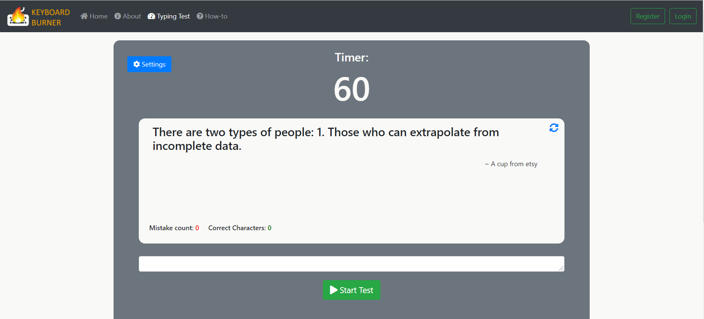

Keyboard Burner offers many cool features and options.
But what good are these options if you do not know how to use them?
That's why the following describes how to use Keyboard Burner, to get the most out of it and have fun!
1. Test your typing speed
- To test your typing speed simply click here or on "Typing Test" in the top Navigation bar and
the following screen will appear

- Click on the green button "Start Test" and an audible and
visual countdown will
start
- After the countdown, the text input field will be automatically
focused and you can start typing
- Be aware that you have to type the whole displayed quote in
correctly before it will display a new quote (You surely want to train to type precisely)
2. Check out your progress
- Of course we need to know who you are to be able to show you your progress, so make sure you are logged in
- Once you are logged in simply click on your user name on the top right corner and you will be redirected to your profile page
- As soon as you have completed at least one test, a graph will show you your progress in terms of typing speed.
- If you want to see more details about your tests, just click on "More details" and you will see a table with all your results.
3. Download your personal typing certificate
- To download you personal typing test certificate check out your personal progress as described in the last point
- The table showing all your test results also contains a download icon for each test
- Select the test result you would like to download as a certificate and click on the download icon
- Now you should see a preview of your tiping certificate, which you can download by simply clicking on "Download as PDF".